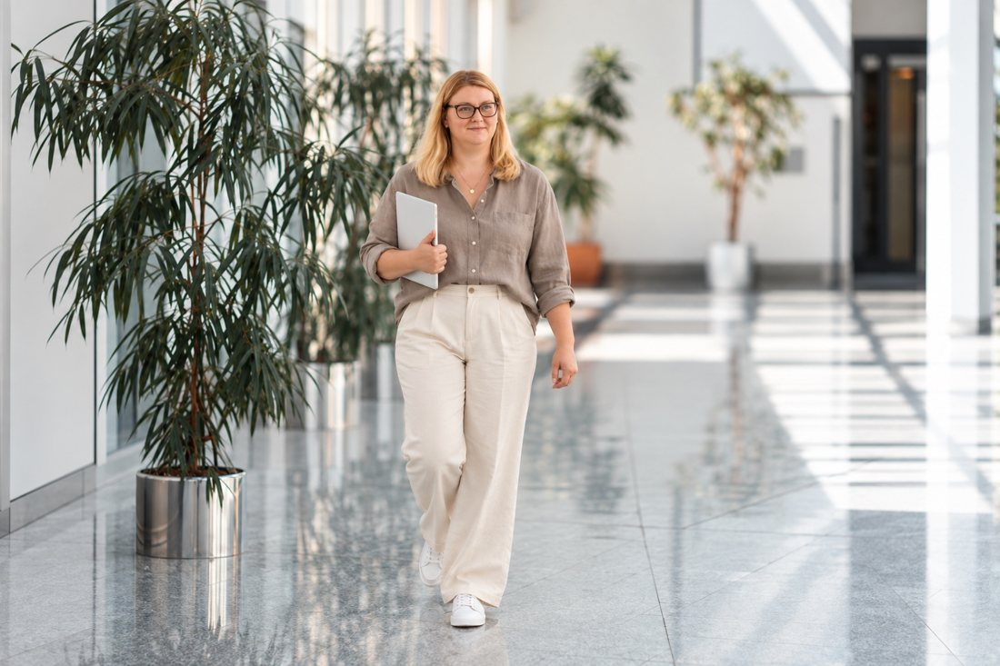
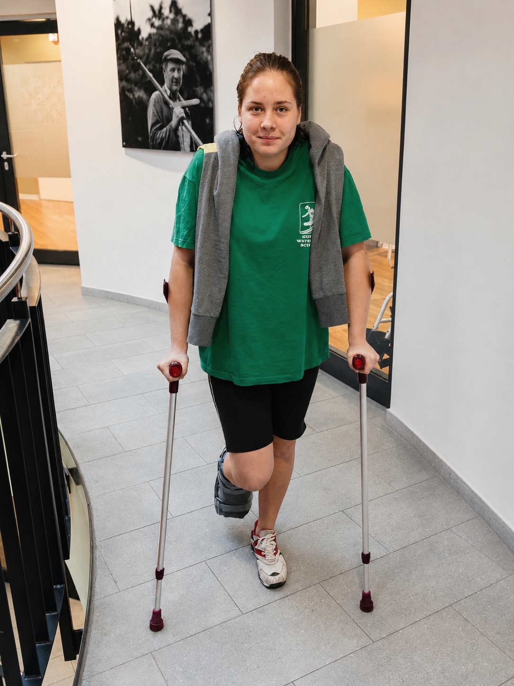
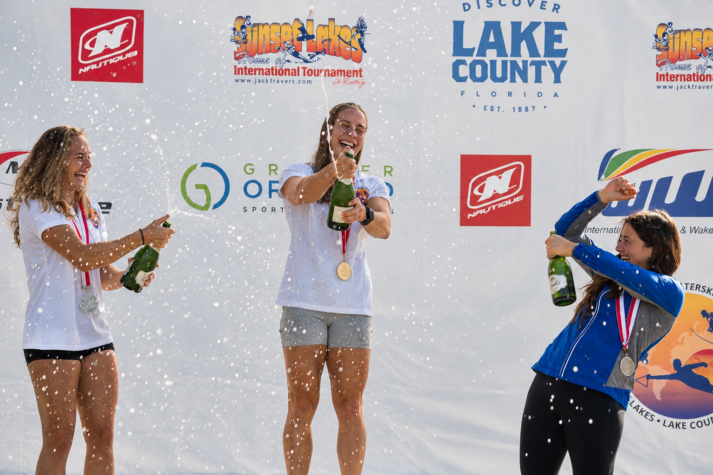
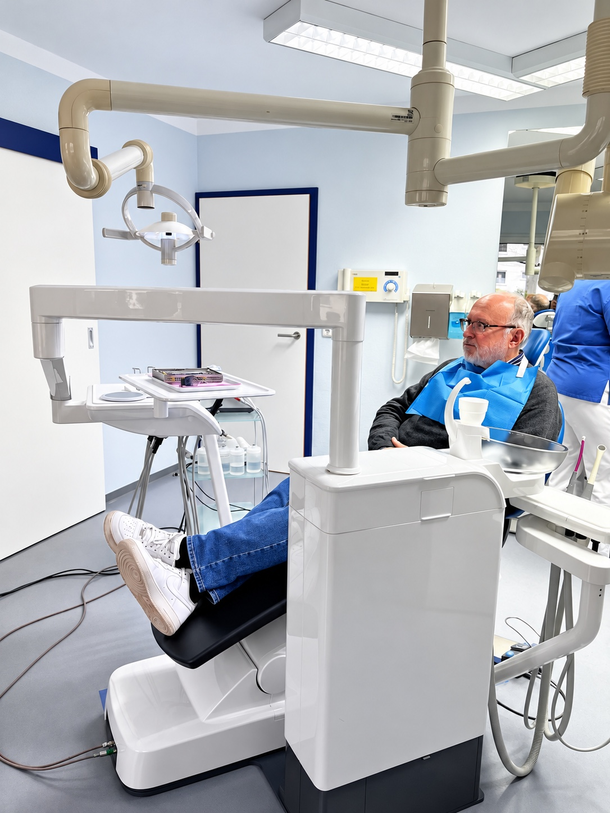

Диагностика и профилактика
Check-up, оценка рисков, профилактические программы и Longevity.
Персональное медицинское сопровождение в Германии — от профилактики и диагностики до лечения и координации комплексных медицинских задач.

01 / НАПРАВЛЕНИЯ
Check-up, оценка рисков, профилактические программы и Longevity.
Поиск профильного эксперта для оценки диагноза или предложенного лечения.
Подбор специалистов и клиник, организация консультаций и этапов медицинской помощи.
Координация сложных медицинских маршрутов и вопросов здоровья семьи.
02 / ПОДХОД
Независимый взгляд на вашу ситуацию. Подходящие специалисты.
Организация
медицинской помощи в Германии — с одним личным контактом.
Вашу ситуацию разбираю индивидуально и работаю с вами лично.
Хорошо знаю, как устроена медицинская система Германии и как найти подходящий путь к нужным специалистам и клиникам.
Координирую согласованные этапы и беру на себя организационные и практические вопросы по ходу сопровождения.
02 / 07
03 / ВОЗМОЖНОСТИ
Когда вопрос касается здоровья, важно не количество контактов, а понимание того, к кому, зачем и в какой последовательности обращаться.
Вы понимаете ситуацию и следующие шаги.
У вас есть понятный маршрут вместо хаотичного поиска и несвязанных действий.
Вам не приходится каждый раз начинать сначала: я знаю контекст вашей ситуации и веду процесс дальше.
Большая часть организационной и операционной работы остаётся за кадром.
Вы понимаете, что происходит сейчас, что будет дальше и к кому обратиться с вопросом.
Конфиденциальность и бережное отношение к личной и медицинской информации — обязательная часть моей работы.
04 / МАРШРУТ
Я помогаю собрать отдельные этапы в понятный процесс — от первого запроса до организации консультаций, обследований, лечения или профилактической программы.
Обсуждаем вашу ситуацию, цели и ожидания.
Изучаю имеющуюся информацию и определяю основные вопросы.
Формирую индивидуальный маршрут и последовательность дальнейших шагов.
Подбираю специалистов и клиники, организую консультации и обследования.
Координирую и сопровождаю вас на каждом согласованном этапе.
05 / ОБО МНЕ

Меня зовут Наталья Генова. Я сопровождаю частных клиентов и семьи в медицинских вопросах в Германии — от профилактики и диагностики до лечения и реабилитации.
За годы работы я хорошо изучила немецкую медицинскую систему: как устроен путь пациента, чем отличаются университетские клиники и частные практики, как организуются консультации и обследования и как найти подходящего специалиста для конкретной ситуации.
Моя задача — сделать медицинский процесс понятнее: спокойно разобраться в ситуации, определить следующие шаги и организовать их.
Всё, что вы мне доверяете, остаётся конфиденциальным.
Медицинские решения принимают врачи совместно с пациентом.
Я
отвечаю за организацию, координацию и понятность процесса.
Я работаю с каждым запросом лично, внимательно отношусь к медицинской информации и веду согласованные этапы так, чтобы вам было понятно, что происходит сейчас и что будет дальше.
06 / ФОРМАТЫ РАБОТЫ
Три понятных формата — от рекомендации по дальнейшим шагам
до
личной координации медицинской помощи.
Помогаю понять возможные следующие шаги. Без подбора конкретных врачей и клиник и без организации лечения.
Подбираю специалистов и клиники, организую медицинскую помощь и лично координирую согласованные этапы.
Единый личный контакт для координации согласованных медицинских вопросов нескольких членов семьи.
Все форматы платные. Объём работы и стоимость согласовываются до начала сотрудничества.
07 / ПРАКТИКА
У каждого свой медицинский вопрос.
Моя работа — помочь выбрать
подходящего специалиста и организовать дальнейшие шаги.
01 / СПОРТИВНАЯ МЕДИЦИНА
После серьёзной травмы Анне предстояло лечение и восстановление в Германии. Благодаря многолетнему опыту работы с немецкими врачами и знанию их специализаций я смогла порекомендовать Анне подходящего ортопеда и организовать дальнейшее лечение.
Анна вернулась в большой спорт, стала чемпионкой мира в 2023 и 2025 годах и установила мировой рекорд в многоборье.


Анна Стрельцова
Спортивные достижения — заслуга самой Анны, её тренеров и команды.
02 / ЦЕННОСТЬ ВРЕМЕНИ
Алексей дважды обращался ко мне за организацией операций в Германии. Для него были важны понятная коммуникация, заранее согласованные шаги и возможность не тратить время на бесконечные звонки и согласования.
История Алексея Глинчука03 / ДОВЕРИЕ СЕМЬИ
Екатерина из Венгрии впервые обратилась ко мне за помощью в организации профилактических обследований в Германии. Со временем наше сотрудничество стало семейным: она начала приезжать на медицинские консультации вместе с детьми.
Я помогала подбирать подходящих специалистов, согласовывать обследования и выстраивать график так, чтобы за одну поездку семья могла решить несколько медицинских вопросов.
История Екатерины · интервью, январь 2024
04 / МНОГОЛЕТНЕЕ СОПРОВОЖДЕНИЕ
Анатолию из Праги уже за семьдесят. Он обращается ко мне с 2018 года, и за это время мы вместе решали самые разные медицинские вопросы.
Я помогала ему выбирать специалистов и организовывать лечение в Германии: ортопедические операции, сложные стоматологические процедуры, хирургию вен, а также регулярные профилактические обследования.
Отдельной задачей стало лечение сложной ЛОР-проблемы, для которой удалось найти подходящего специалиста и эффективное решение. Анатолий также регулярно проходит обследования зрения и заказывает в Германии индивидуально подобранную оптику с учётом особенностей своего зрения.
С возрастом особенно важно учитывать общее состояние здоровья и предыдущий медицинский опыт при выборе специалистов и планировании лечения.
Анатолий продолжает доверять мне свои медицинские вопросы и спустя многие годы сотрудничества.
История Анатолия · сотрудничество с 2018 года

08 / КОНТАКТЫ
Опишите ваш запрос в WhatsApp. Я ознакомлюсь с ним, после чего мы обсудим возможный формат работы и следующие шаги.
Личная и медицинская информация обрабатывается конфиденциально и используется только для работы с вашим запросом.